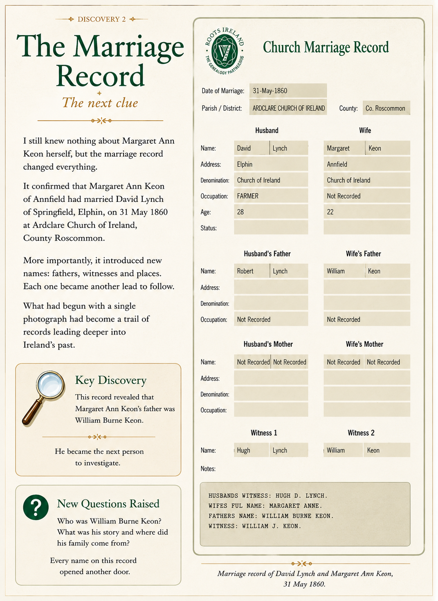

In 2014, I knew nothing about my great-grandmother, Margaret Ann Lynch. All I knew was that she had come from County Roscommon, Ireland.
Then I received an unexpected message from someone I had never met.
She had found an old family photograph album at a church sale. Curious about the names written inside, she searched online and came across my family history research. Realising the album was connected to the family I was researching, she contacted me and kindly offered to send it to me. A few days later, the album arrived.
When the album arrived, I opened it to the first page. Beside a faded family photograph were handwritten notes identifying those pictured.
A name to followUntil that moment, all I knew was that my great-grandmother, Jennie Lynch, had come from County Roscommon. Margaret Ann Keon gave me my first lead into Irish family history.
Margaret Ann Keon.